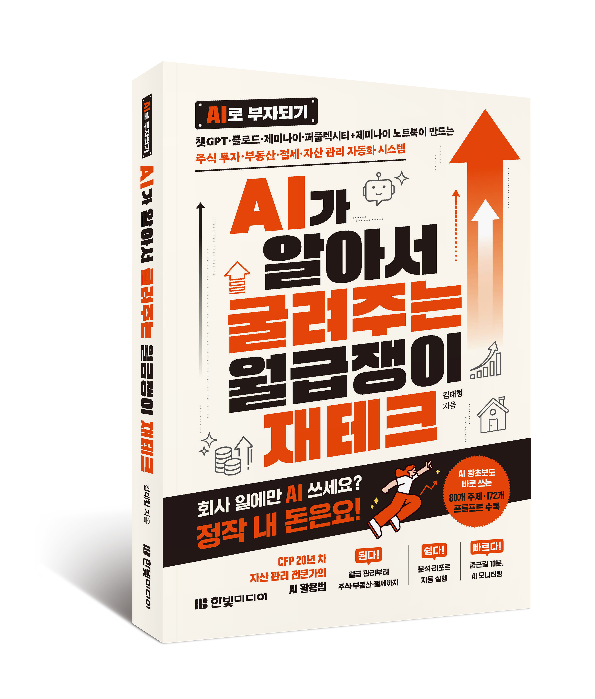

돈버프
돈 버는 프롬프트
📂
자료실
💬
독자 오픈채팅방
📖
책 구매하기
→
독자 오픈채팅방 입장
💬
『AI로 부자되기』 프롬프트 라이브러리
돈 버는
프롬프트
돈버프
AI에게 올바른 질문을 던지면 돈이 보입니다.
필요한 프롬프트를 골라 바로 복사해서 쓰세요.
172
총 프롬프트
7
카테고리
5
AI 툴

⚡
오늘의
돈버프
바로 보기 →
🏆 사마리아인 추천 BEST 3
매주 업데이트
🔍
⭐ 즐겨찾기
(0)
🕐 최근 본
(0)
전체
재무진단
지출·저축
AI투자팀
주식투자
부동산
절세전략
재테크루틴
검색 결과가 없습니다. 다른 키워드로 검색해보세요.